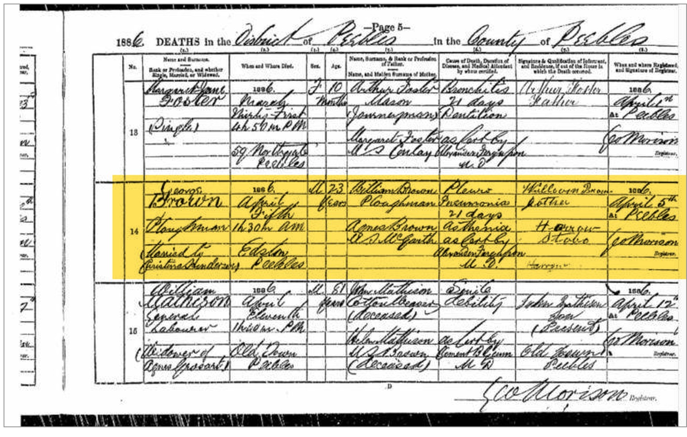

Item 6 · April 5, 1886
Death registration: George Brown
The document

This copy carries yellow highlighting or red outlining added for the book site. It is not on the original.
Tap an image to open it full size.
Transcription, word for word
Everything as written, including misspellings. [?] marks an uncertain reading. Struck-through words are marked as struck through. Notes in square brackets describe the page and are not part of it.
—Page 5— 1886. DEATHS in the District of Peebles in the County of Peebles [Column headings, printed] No. | Name and Surname. Rank or Profession, and whether Single, Married, or Widowed. | When and Where Died. | Sex. | Age. | Name, Surname, & Rank or Profession of Father. Name, and Maiden Surname of Mother. | Cause of Death, Duration of Disease, and Medical Attendant by whom certified. | Signature & Qualification of Informant, and Residence, if out of the House in which the Death occurred. | When and where Registered, and Signature of Registrar. No. 13 Name: Margaret Jane Foster (Single) Died: 1886. March Thirty First 4h. 50m. P.M. 59 Northgate Peebles Sex: F. Age: 10 Months Father/Mother: Arthur Foster Mason Journeyman. Margaret Foster M.S. Conlay Cause: Bronchitis 21 days Dentition as Cert by Alexander Ferguson M.D. Informant: Arthur Foster Father Registered: 1886. April 1st At Peebles Geo Morison Registrar. No. 14 Name: George Brown Ploughman (Married to Christina Henderson) Died: 1886. April Fifth 1h. 30m. AM. Edston Peebles Sex: M. Age: 23 Years Father/Mother: William Brown Ploughman. Agnes Brown M.S. McGarth Cause: Pleuro Pneumonia 21 days Asthenia as Cert by Alexander Ferguson M.D. Informant: William Brown Father. Harrow – Stobo – [a word below, illegible] Registered: 1886. April 5th At Peebles Geo Morison Registrar. No. 15 Name: William Mathison General Labourer (Widower of Agnes Grossart) Died: 1886. April Eleventh 1h. 0m. A.M. Old Town Peebles Sex: M. Age: 81 Years Father/Mother: Wm Mathison Cotton Weaver (deceased). Helen Mathison M.S. Brown (deceased) Cause: Senile debility as Cert by Clement B Gunn M.D. Informant: John Mathison Son (Present) Old Town Peebles Registered: 1886. April 12th At Peebles Geo Morison Registrar. [Signature] Geo Morison Registrar. [Left edge: part of the facing page, cut off]